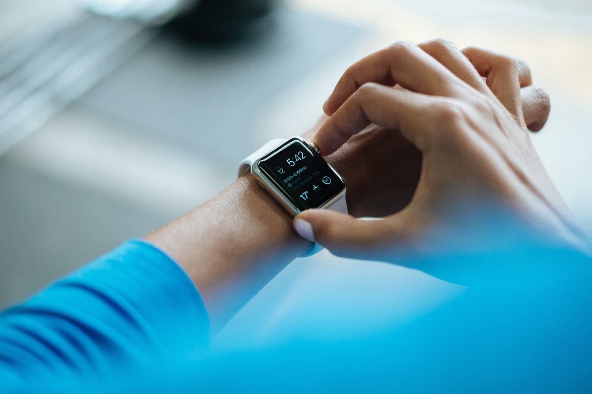

"Oh beautiful for spacious skies, for amber waves of GRAIN"?
SPOILER ALERT:
Multiple American based fast food restaurants no longer offer salads on their food menu.
As of the year 2020, 1 in 10 Americans have Type 2 diabetes and 1 in 3 Americans are
pre-diabetic according to the CDC.
So should we ask patients during a physical exam when screening them for Type 2 Diabetes; does anyone in your family have diabetes? Or based upon the CDC data from 2020, are you AMERICAN?
With a pharmaceutical industry pushing weight loss medications and patients Young as 22 years old opting for bariatric surgery as the fix for an American problem, remember that after taking the weight loss pill or having weight loss surgery you go back to the same food choices right here in the same old America.
 Photo by Dr. Colin RossIf you have the Surgery, take a weight loss Medication or just want to keep healthy, the lower 6 program is not just a Cell Phone App, but a diet and exercise program that will keep you off of the CDC stat sheet. I receive Phone calls and letters every day from clients who practice the " drink rule" and are amazed how a simple principle like that really works to help them lose weight.
So here is the good news. A philanthropist has decided to make a donation for our international program and a few dollars we will dedicate to see if we can help out a couple of Americans also. Oh TASTE and SEE that lifestyle is good even right here in America.